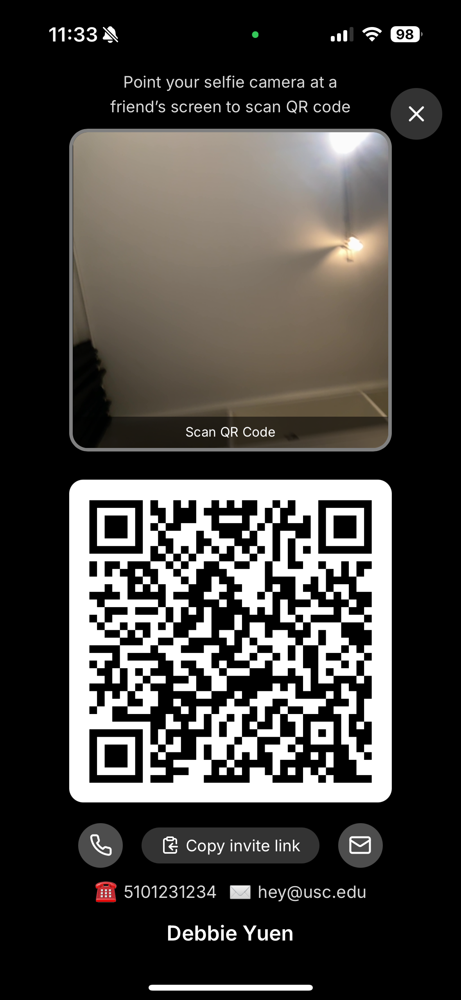
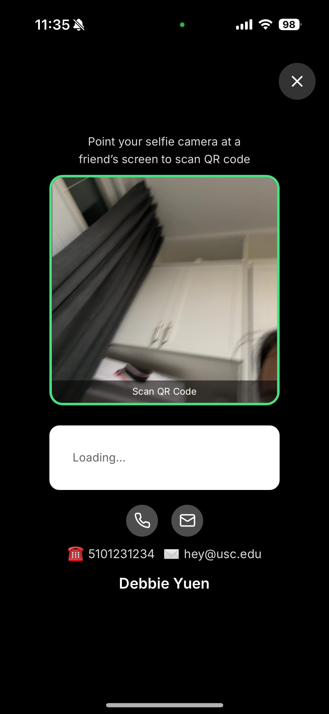

Union — help without signing in
This page is for App Store support and anyone who needs help using Union. You do not need an account to read it.
Open Union on your iPhone or Android device from the store listing, or use the web app at https://app.fairshare.social/.
This section walks through Union's camera-based "Meet" handshake — the one feature that benefits most from a visual walkthrough rather than text alone. Demo account credentials are provided separately in the App Review Information → Notes field, not on this public page.
Step 1 — Open Meet. Tap the heart-shaped button in the bottom bar. You'll see your own QR code and a live camera view labeled "Scan QR Code," with the instruction "Point your camera at a friend's screen to scan their code" at the top.

Step 2 — Point your camera at the other phone's screen. As soon as a QR code is detected in frame, the camera view's border flashes green to confirm it's actively scanning — even before the connection completes.

Step 3 — Connection completes automatically. Once either phone successfully scans the other's code, both accounts are connected as contacts immediately — the other phone does not need to also complete a scan.
Camera access is requested only when one of these features is opened, never at launch: scanning a sponsor's QR code at sign-up, the Meet handshake above, taking a selfie with a contact, and suggesting a new profile picture for a contact.